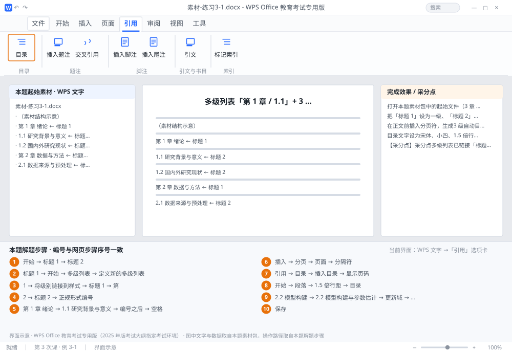

完成比对文档 · 例 3-1
多级列表「第 1 章 / 1.1」+ 3 级自动目录 + 目录样式修改 ｜ 第 3 次课 / WPS 文字 ｜ 网页：实操-文字3.html ｜ 考试环境：WPS Office 教育考试专用版（2025 年版考试大纲指定考试环境）
用途 本页按修订后的题目要求与解题步骤生成，是交卷自查的结果基准：
逐项列出每一步应出现的可复核结果，配合模拟操作截图与解题结果文件使用。
它不是素材包的一部分，不会预置答案动作；起始素材仍从本题素材包下载。
一、本题起始素材包
目录：练习素材/练习3-1-多级列表与目录/ ｜
下载包：练习素材/下载/练习3-1-多级列表与目录.zip
二、题目要求
- 打开本题素材包中的起始文件（3 章 6 节，章节标题已分别套用「标题 1」「标题 2」样式）。
- 把「标题 1」设为一级、「标题 2」设为二级，建立多级列表：一级格式「第 1 章」，二级格式「1.1」。
- 在正文前插入分页符，生成3 级自动目录：显示页码、页码右对齐、制表符前导符为「……」。
- 目录文字设为宋体、小四、1.5 倍行距。
- 把第 2 章某节标题改一个字，然后更新整个目录，确认目录同步。
- 保存为 学号-姓名-练习3-1.docx。
三、解题步骤（编号与下方核对表、截图编号一致）
- 检查样式。「开始」→ 样式窗格里确认每一章标题套的是「标题 1」，每一节套的是「标题 2」。样式不对，后面全白做。
- 打开多级列表。光标放在任一「标题 1」段落内 →「开始」→「多级列表」→「定义新的多级列表」。
- 设第 1 级。左侧点「1」→ 右侧「将级别链接到样式」选「标题 1」→ 编号格式框里在数字前输入「第」、数字后输入「章」（显示为 第1章）→ 编号样式「1,2,3,…」→ 对齐方式「左对齐」→ 缩进 0。
- 设第 2 级。左侧点「2」→ 链接到「标题 2」→ 勾选「正规形式编号」→ 编号格式显示为 1.1 → 缩进 2 字符。
- 确定并检查。标题应自动变成「第 1 章 绪论」「1.1 研究背景与意义」。若标题前面多出制表符或缩进异常，回到多级列表对话框调「编号之后」为「空格」。
- 插分页符。光标置于正文第一段之前 →「插入」→「分页」（或「页面」→「分隔符」→「分页符」）。
- 插入目录。光标停在新的空白页首 →「引用」→「目录」→「插入目录」→ 勾选「显示页码」与「页码右对齐」→ 显示级别选 3 → 制表符前导符选「……」→ 确定。
- 改目录样式。选中整个目录 →「开始」→ 宋体、小四 →「段落」对话框 → 行距「1.5 倍行距」→ 确定。更规范的做法是右键「目录」→「修改样式」，改的是「目录 1/2/3」样式，更新后不会丢。
- 改标题并更新。把「2.2 模型构建」改成「2.2 模型构建与参数估计」→ 右键目录 →「更新域」→ 选「更新整个目录」→ 确定。
- 保存。保存为 学号-姓名-练习3-1.docx。
四、完成效果 / 采分点
采分点多级列表已链接「标题 1」「标题 2」（非手工输入编号） · 一级为「第 1 章」、二级为「1.1」 · 分页符位置正确 · 目录为自动目录、级别 3、页码右对齐、点状前导符 · 目录为宋体小四 1.5 倍行距 · 已更新整个目录且新标题出现在目录中
五、逐项完成核对表
| 步骤 | 关键操作路径 | 应出现的结果（可复核） |
|---|
| 1 | 检查样式 | 「开始」、「标题 1」、「标题 2」 |
| 2 | 打开多级列表 | 「标题 1」、「开始」、「多级列表」、「定义新的多级列表」 |
| 3 | 设第 1 级 | 「1」、「将级别链接到样式」、「标题 1」、「第」、「章」 |
| 4 | 设第 2 级 | 「2」、「标题 2」、「正规形式编号」、2 字符 |
| 5 | 确定并检查 | 「第 1 章 绪论」、「1.1 研究背景与意义」、「编号之后」、「空格」 |
| 6 | 插分页符 | 「插入」、「分页」、「页面」、「分隔符」、「分页符」 |
| 7 | 插入目录 | 「引用」、「目录」、「插入目录」、「显示页码」、「页码右对齐」 |
| 8 | 改目录样式 | 「开始」、「段落」、「1.5 倍行距」、「目录」、「修改样式」 |
| 9 | 改标题并更新 | 「2.2 模型构建」、「2.2 模型构建与参数估计」、「更新域」、「更新整个目录」 |
| 10 | 保存 | 学号-姓名-练习3-1.docx |
六、模拟操作截图

界面示意 · WPS Office 教育考试专用版 · 橙色编号与本题解题步骤序号一致；
图中文字与数据取自本题素材包，功能入口取自本题解题步骤。
核对方法：按网页解题步骤完成并另存自己的成稿后，逐行比对本表第 3 列的
参数、公式、区域、文件名与对象数量；再对照网页「完成效果 / 采分点」检查版式是否一致。